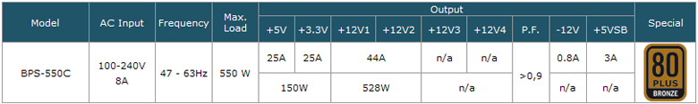
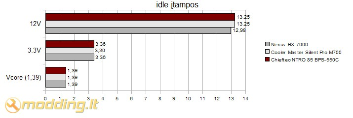
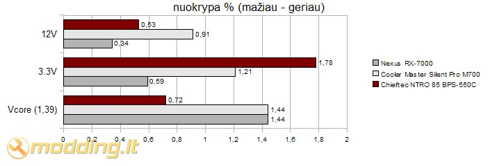

Chieftec NTRO 85 BPS-550C maitinimo blokas
Lietuvos rinkoje yra keli vyraujantys maitinimo blokų gamintojai, kurių produkciją dažniausiai renkasi pirkėjai. Manau tarp jų yra ir Chieftec. Šios kompanijos produkcija nėra naujiena Lietuvoje, todėl daugelis kompiuterių naudotojų jau žino šį prekinį ženklą. Atėjo eilė iš arčiau susipažinti su Chieftec siūlomais maitinimo blokais. Nitro Series maitinimo blokai pasirodė birželio mėnesį ir šiuo metu jau yra sulaukę gerų atsiliepimų iš apžvalgininkų. Šiandieną į mano rankas papuolė Chieftec NTRO 85 BPS-550C maitinimo blokas, kurį nieko nelaukdamas pristatau jums.
Žvilgsnis iš arčiau
Nitro serija susideda iš 10 skirtingo galingumo modelių ir yra tarsi suskirstyta į du pogrupius: 350W-500W ir 550W-1200W modeliai. 350W-500W blokai neturi modular tipo laidų, o pagal efektyvumą atitinka 80Plus Bronze reikalavimus. Galingesni 550W-1200W maitinimo blokai turi atjungiamus laidus, gražesnį apipavidalinimą bei aušinami 140mm ventiliatoriais. NTRO 85 BPS-550C (550W) maitinimo blokas yra pirmasis iš savo serijos, turintis modulinius - atjungiamus laidus.
Pakuotės viduje randame:
- NTRO 85 BPS-550C maitinimo bloką
- Power laidą
- Modular laidus
- 4 tvirtinimo varžtus
- Manual - vartotojo knygelę
Chieftec NTRO 85 BPS-550C maitinimo bloko komplektacija yra standartinė - viskas ko reikia ir nieko papildomo.
Molex, PCI-E bei Sata maitinimo laidai yra atjungiami - Modular tipo. Visi jie įvilkti į juodą apsauginį tinkliuką, o kištukai juodos spalvos. Patiko laidų lankstumas - sulenkti jie laiko formą ir tuomet juos lengviau išvedžioti korpuse. Laidų minkštumas ypač aktualus pajungiant ATX maitinimo laidą, kuomet laidą reikia sulenkti prie pat jungties tam, kad pajungti jį prie motininės plokštės. Žmonėms, kurie nesurinkinėja PC patys ši savybė nėra aktuali, tačiau modding'o entuziastams ar spartinimo mėgėjams, testuojantiems ir perrenkantiems sistemas kelis kartus per dieną, lankstūs ir patogiai išvedžiojami laidai yra privalumas.
Specifikacijos
- Modelis: BPS-550C
- Išmatavimai: 160(ilgis) x 150(plotis) x 87(aukštis) mm
- Galia: 550 W
- Efektyvumas: >85%, 80 PLUS® Bronze
- Ypatybės: intel/AMD dual core support, SLI/nVidia ready
- Apsaugos: Aktiv PFC (Power Factor Correction), UVP (Undervoltage protection), OVP (Overvoltage protection), SCP (Short-circuit protection), OPP (Overload protection), OCP (Overcurrent protection), OTP (Over Temperature Protection)
- Ilgaamžiškumas: MTBF (mean time between failure): >100.000h
- Ventiliatorius: 140mm, automatiškai valdomi RPM
- Triukšmo lygis: 24db
- Jungtys:
Gamintojo deklaruojamas BPS-550C bloko efektyvumas >85%, 80 PLUS® Bronze. Blokas yar vieno rail, turi dvi linijas po 12V, kurios turi 44A stiprį.

Chieftec NTRO 85 BPS-550C maitinimo blokas nudažytas juodais matiniais dažais, ventiliatoriaus tinkliukas taipogi juodas. Už tikliuko - 140mm ventiliatorius, kurio apsukos reguliuojamos automatiškai, priklausomai nuo PSU apkrovos. Vidinėje maitinimo bloko dalyje išdėstyti atjungiamų laidų lizdai: lizdai skiriasi savo forma bei spalva - naudotis paprasta ir patogu.
Galinėje korpuso sienelėje matome On/Off mygtuką, jis be šviesos indikacijos. Šalia išdėstytas Power laido lizdas.

Šis maitino blokas apipavidalintas paprastai, tačiau tuo pačiu gražiai - juoda spalva, ant PSU dangčio šoninės dalies išspaustas bloko modelis bei gamintojo pavadinimas ir Chieftec logotipas, esantis ant grotelių vidurio, atrodo solidžiai. Naudojamas niekuo neišsiskiriantis, tačiau prie bendro vaizdo derantis, juodas 140mm ventiliatorius, kurio gamintojas yra Yate Loon Electronics. Ventiliatoriaus charakteristikos: 12V, 0,7A. Chieftec nurodomas triukšmo lygis yra 24db. Ventiliatorius gali būti atjungtas ir prijungtas be jokio vargo - panaudotas 2 pin kištukas.
Maitinimo bloko dangtį laiko 6 juodi varžtai, kuriuos atsukę ir nuėmę dangtį pasiekiame PSU komponentus. Viduje randame nedidelį juodą radiatorių, prie kurio pritvirtinti lauko tranzistoriai bei Schottky tipo dvigubi diodai. Maitinimo bloke naudojami standartiniai mažo impedanso (angl. low ESR) kondensatoriai, gebantys neišsipūsti net 105 C trumpalaikėje aplinkos temperatūroje. Beveik visi bloke naudojami droseliai ir impulsiniai transformatoriai yra papildomai įvilkti į termo kebrikus (angl. heat shrink), kurie apsaugo elementų apvijas nuo apdulkėjimo ir išsikreipimo. Įdomu tai, kad viršįtampių iškrovikliai yra prilituoti tiesiai prie PSU maitinimo jungties. Tai gan logiškas sprendimas (nėra reikalo viršįtampių įleisti kur nors giliau į pagrindinę plokštę), tačiau ne toks elegantiškas, kaip papildomos PCB plokštelės panaudojimas. Žinoma šie iškrovikliai papildomai galėtų būti pritvirtinti kokias nors klijais, apsaugančiais nuo atsivibravimo, kaip kad gamintojas padarė su kitais didesniais ir svarbesniais schemos elementais. Džiugu, kad gamintojas panaudojo aktyvų galios koeficiento korektorių (angl. Power Factor corrector). Tai ne tik užtikrina maitinimo bloko ilgaamžiškumą, pagerina jo energetinius rodiklius, bet ir sumažina į elektros tinklą skleidžiamus harmoninius triukšmus.
Rezultatai
Testavimo sistema:
- CPU Cooler - Noctua NH-U12P SE2
- Case - Antec Mini P180
- Mainboard - Asus M2N68-AMSE2
- CPU - AMD ATHLON 64 X2 Dual-Core 5000+ AM2 (65W)
- RAM - Corsair DDR2 KIT 2X1G 800MHZ TWIN2X2048-6400 G
- HDD - SEA BARRACUDA 160GB 7200rpm
- PSU - Chieftec NTRO 85 BPS-550C
Chieftec NTRO 85 BPS-550C maitinimo blokas buvo testuojamas naudojant OCCT 3.0.0 programą, kuri apkrauna PC komponentus ir fiksuoja įtampos kitimus vcore, 3.3V, 5V ir 12V linijose . Testas buvo atliekamas 1 valandą. Pateikiu gautų rezultatų grafikus:
Gauti rezultatai surašomi į lenteles: idle įtampos - įtampos neapkrovus PC, load - įtampos apkrovus PC. Apskaičiuojamos kiekvienos linijos nuokrypos (pagal maksimalų įtampso kritimą) nuo idle reikšmių. Nuokrypos išreikštos %. Mažesnė nuokrypos reikšmė - geresnis rezultatas.


Kartu su
Chieftec NTRO 85 BPS-550C maitinimo bloku buvo testuojami dar du blokai, tai
Cooler Master Silent Pro M700 ir
Nexus RX-7000. Lyginant su šiais matinimo blokais, BPS-550C bloko rezultatai yra geri: tiek idle, tiek load rėžimuose Chieftec maitinimo bloko įtampos didesnės nei Cooler Master Silent Pro M700 ir Nexus RX-7000 maitinimo bloko. Stebint nuokrypas nuo idle įtampų dydžio rezultatai taipogi geri: Chieftec NTRO 85 BPS-550C nuokrypos vcore ir 12V yra mažesnės nei Cooler Master Silent Pro M700 maitinimo bloko. 3.3V linijoje nuokrypos didesnesnės nei kitų testuotų PSU - apie 1.72 %, tačiau ir su tokia nuokrypą Chieftec matinimo blokas load rėžime užtikrino lygiai 3.3V įtampą. Kiek dažnesnius šuolius matome 12V linijoje, čia maksimalus nuokrypis buvo 0.53 %. Cooler Master Silent Pro M700 ir Nexus RX-7000 12V diagramos buvo tolygesnės, įtampos šuoliai buvo rečiau.
Išvados
Pliusai:
- kokybiškas gaminys
- geri testo rezultatai
- 4 pin (20+4pin) jungtukas turi mažas auseles tvirtinimui
- Modular tipo laidai
- lengvai atjungiamas ventiliatorius
- lankstūs laidai
- tylus 140mm ventiliatorius
Minusai:
- nerasta
 Chieftec NTRO 85 BPS-550C maitinimo blokas yra kokybiškai surinktas bei efektyviai funkcionuojantis įrenginys: lyginant su kitais dviem teste dalyvavusiais matinimo blokais, BPS-550C bloko įtampų rezultatai yra geri, Chieftec NTRO 85 BPS-550C nuokrypos vcore ir 12V yra mažesnės nei kitų teste dalyvavusių maitinimo blokų. 3.3V linijoje nuokrypos didesnesnės nei kitų testuotų PSU - apie 1.72
%, tačiau ir su tokia nuokrypą Chieftec matinimo blokas load rėžime
užtikrino lygiai 3.3V įtampą. Kiek dažnesnius šuolius matome 12V
linijoje, čia maksimalus nuokrypis buvo 0.53 %. BPS-550C blokas nėra išskirtinio dizaino, tačiau atrodo solidžiai. Kaip pliusą vertėtų paminėti lanksčius laidus, 4 pin jungtuko auseles bei lengvai atjungiamą ventiliatorių. Kalbant apie kainą - ji nenukrypsta iš panašaus galingumo ir kokybės maitinimo blokų kainų. Susumavęs visus pliusus bei atliktų testų rezultatus
Chieftec NTRO 85 BPS-550C maitinimo blokui skiriu
9 balus iš 10.
Chieftec NTRO 85 BPS-550C maitinimo blokas yra kokybiškai surinktas bei efektyviai funkcionuojantis įrenginys: lyginant su kitais dviem teste dalyvavusiais matinimo blokais, BPS-550C bloko įtampų rezultatai yra geri, Chieftec NTRO 85 BPS-550C nuokrypos vcore ir 12V yra mažesnės nei kitų teste dalyvavusių maitinimo blokų. 3.3V linijoje nuokrypos didesnesnės nei kitų testuotų PSU - apie 1.72
%, tačiau ir su tokia nuokrypą Chieftec matinimo blokas load rėžime
užtikrino lygiai 3.3V įtampą. Kiek dažnesnius šuolius matome 12V
linijoje, čia maksimalus nuokrypis buvo 0.53 %. BPS-550C blokas nėra išskirtinio dizaino, tačiau atrodo solidžiai. Kaip pliusą vertėtų paminėti lanksčius laidus, 4 pin jungtuko auseles bei lengvai atjungiamą ventiliatorių. Kalbant apie kainą - ji nenukrypsta iš panašaus galingumo ir kokybės maitinimo blokų kainų. Susumavęs visus pliusus bei atliktų testų rezultatus
Chieftec NTRO 85 BPS-550C maitinimo blokui skiriu
9 balus iš 10.
Chieftec NTRO 85 BPS-550C galite įsigyti daugelyje Lietuvoje kompiuterine technika prekiaujančių parduotuvių, jo kaina apie 270Lt.
Modding.lt komanda dėkoja Bo Chen iš www.chieftec.eu už apžvalgai suteiktą produktą.
Jei norėsite pakomentuoti mano straipsnį arba pareikšti savo nuomonę, apsilankykite Modding.lt forume.


{kind=link}
{kind=link}
{kind=link}
{kind=link}
{kind=link}
{kind=link}
{kind=link}
{kind=link}
{kind=link}
{kind=link}
{kind=link}
{kind=link}
{kind=link}
{kind=link}
{kind=link}
{kind=link}
{kind=link}
{kind=link}
{kind=link}
{kind=link}
{kind=link}
{kind=link}
{kind=link}